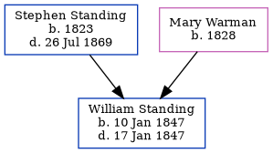

William Standing 1847 - 1847
[ Home ] | [ Calendar ] | [ Surnames Index ] | [ Errors ] | [ Family History ]The child of Stephen Standing (a labourer) and Mary Warman, William Standing, the second cousin three-times-removed on the father's side of Nigel Horne, was born in Elham, Kent, England on 10 Jan 18471.
He died on 17 Jan 1847 in Folkestone, Kent, England2 (premature birth).
Parents
- Stephen was born in 1823
- Mary Ann was born in 1828
Citations
- England & Wales births 1837-2006 - Findmypast
- England & Wales deaths 1837-2007 - Findmypast
Media
William Standing - death certificate

England & Wales deaths 1837-2007 - BMD/D/1847/1/AZ/000818/082
England & Wales births 1837-2006 - BMD/B/1847/1/IS/001475/006
Family Tree
Map
Generated by ged2site. Last updated on Jul 3, 2024